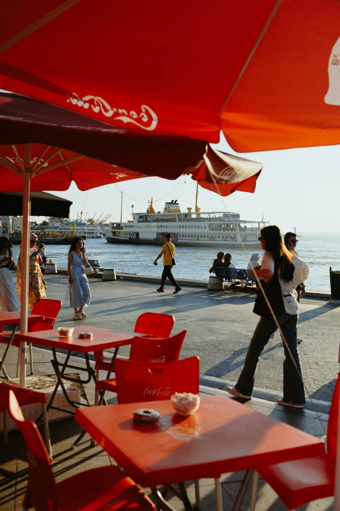

Cuisine française et desserts maison, en salle ou en terrasse face à l'eau, quai Jean Jaurès.

La carte suit la saison. Elle est affichée sur place, et les nouveautés passent sur la page Facebook du restaurant.
La terrasse est au bord de l'eau, face au port.
Aux beaux jours, pensez à réserver pour être sûr d'y avoir une table.
Les jours et heures d'ouverture changent avec la saison. Appelez le restaurant avant de venir.